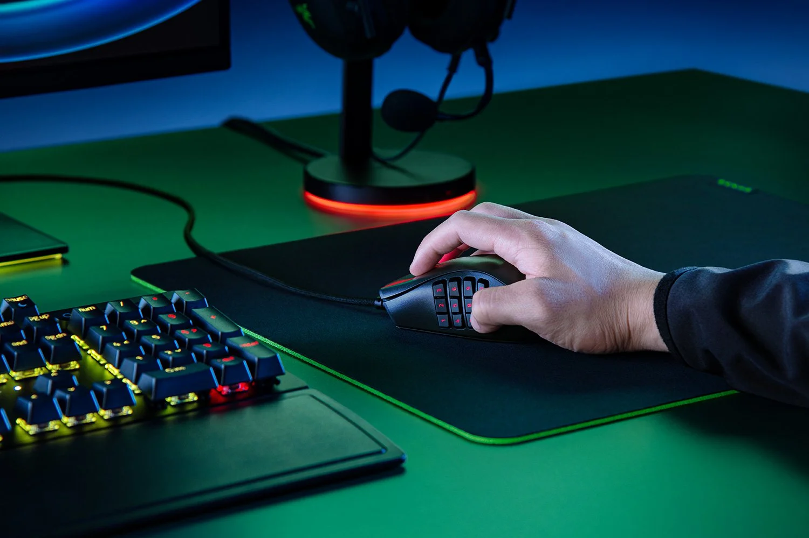
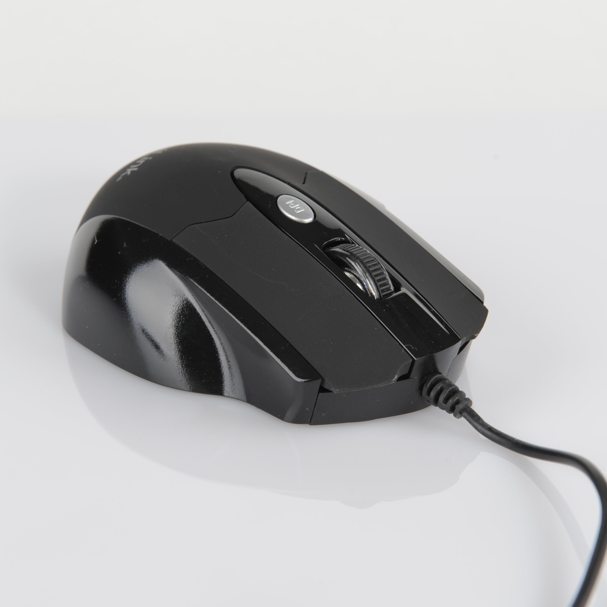
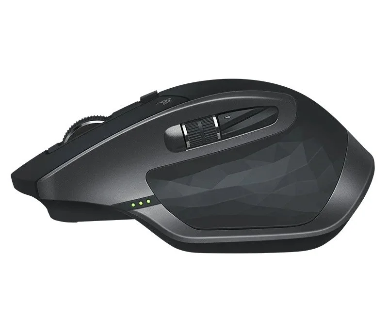

One of the most important tools at a gamer's disposal is the gaming mouse. Choosing the right gaming mouse can significantly enhance your performance and overall enjoyment during gaming sessions. With a plethora of options available on the market, finding the perfect gaming mouse can be a daunting task. To help you make an informed decision, here are seven tips for choosing the right gaming mouse.
Table of Content
______________________________________________________________________________
______________________________________________________________________________
1. Determine Your Grip Style:
Gemma Ryles , CC BY-NC-ND 4.0, Via Trusted Reviews
Different gamers have different grip styles – palm grip, claw grip, or fingertip grip. Understanding your preferred grip style is crucial when selecting a gaming mouse. Some mice are designed for palm grip users with a larger form factor, while others cater to claw or fingertip grip with a more compact and lightweight design. Choose a mouse that feels comfortable and natural for your specific grip style to avoid discomfort during long gaming sessions.
2. Consider Sensor Type and Sensitivity:
The sensor is the heart of any gaming mouse, and it plays a pivotal role in determining its accuracy and responsiveness. Optical and laser sensors are the two primary types, with optical sensors generally being preferred for gaming due to their more accurate tracking. Additionally, consider the mouse's sensitivity measured in DPI (dots per inch). Higher DPI settings provide faster cursor movements, which can be advantageous in fast-paced games, but it ultimately comes down to personal preference.
3. Look at the Design and Weight:
The design and weight of a gaming mouse can significantly impact your gaming experience. Some gamers prefer a heavier mouse for stability, while others opt for a lighter one for quick, agile movements. Adjustable weights are a great feature for those who want the flexibility to customize the mouse's weight to their liking. Additionally, consider the ergonomics of the mouse, ensuring it fits comfortably in your hand and has well-placed buttons for easy access during gameplay.
4. Check for Customizable Buttons:
Chris Smith, CC BY-NC-ND 4.0, Via Trusted Reviews
Customizable buttons can be a game-changer, allowing you to tailor the mouse to your specific needs and preferences. Many gaming mice come with programmable buttons that can be assigned to specific in-game functions, giving you a competitive edge. Consider the type and placement of the buttons based on the games you play – whether it's an MMO that requires numerous programmable buttons or a first-person shooter where quick access to specific commands is crucial.
5. Evaluate Connectivity and Compatibility:

Jacek Halicki, CC BY-SA 4.0, via Wikimedia Commons
The connectivity of your gaming mouse is another crucial factor. Wired mice generally offer lower latency, ensuring a more responsive gaming experience, while wireless mice provide the freedom of movement without the hassle of cables. Choose the option that aligns with your preferences. Additionally, check the compatibility of the mouse with your gaming platform – whether it's PC, Mac, or a gaming console.
6. Check Reviews and Ratings:
Before making a final decision, take the time to read reviews and ratings from other gamers. Real-world experiences can provide valuable insights into a mouse's performance, durability, and any potential issues. Look for reviews that focus on the specific aspects that matter most to you, such as responsiveness, build quality, and comfort. Online forums and communities can also be great resources for gathering opinions and recommendations.
7. Set a Budget:
Gaming mice come in a wide range of price points, and while it's tempting to go for the latest high-end models, it's essential to set a realistic budget. Determine how much you're willing to spend on a gaming mouse and then look for options within that range. Keep in mind that a higher price doesn't always guarantee a better gaming experience, so consider the features that matter most to you and find a mouse that strikes the right balance between performance and cost.
Conclusion
Choosing the right gaming mouse is a personal decision that depends on your individual preferences, playing style, and budget. By considering factors such as grip style, sensor type, design, customizable features, connectivity, and reviews, you can narrow down your options and find the perfect gaming mouse to elevate your gaming experience.


{kind=link}
{kind=link}